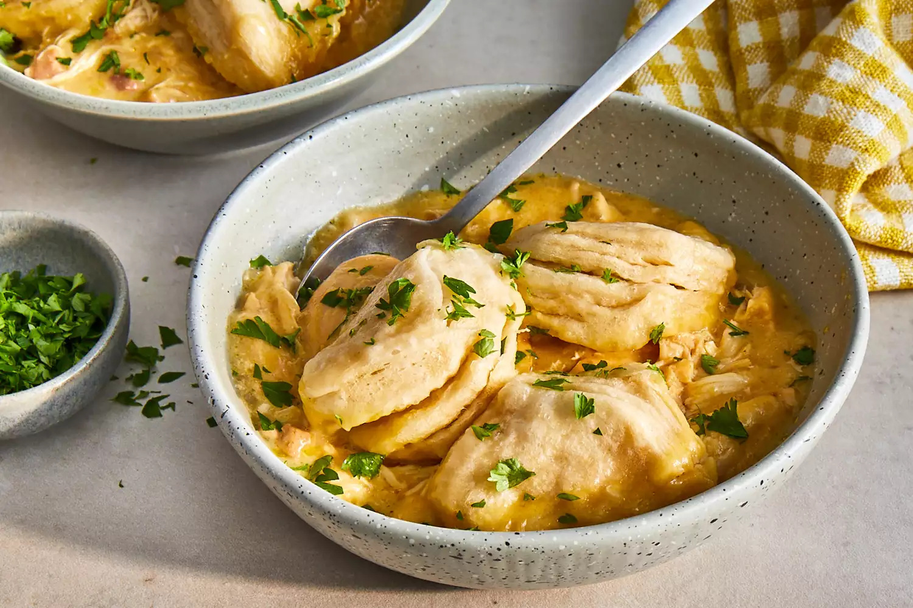

Chicken And Dumplings

Description
Chicken and dumplings is a soup-like dish that consists of chicken, a thick broth, and dumplings made out of biscuit dough. The iconic comfort food is filling, made with cheap ingredients, and deliciously cozy.
Ingredients
- 4 skinless, boneless chicken breast halves
- 2 tablespoons butter
- 2 (10.5 ounce) cans condensed cream of chicken soup
- 1 medium onion, finely diced
- 1 (10 ounce) package refrigerated biscuit dough
- 2 cups water, or as needed to cover
Steps
- Place chicken, condensed soup, onion, and butter in a slow cooker. Add enough water to cover; stir well. Cover and cook on High for 5 to 6 hours.
- About 30 minutes before serving, tear biscuit dough into pieces. Place dough in the slow cooker. Cook until dough is no longer raw in the center.
- Serve hot and enjoy!